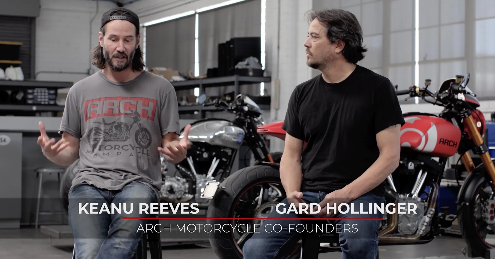
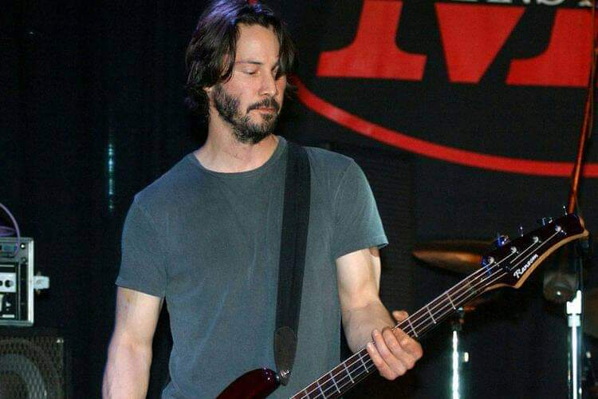
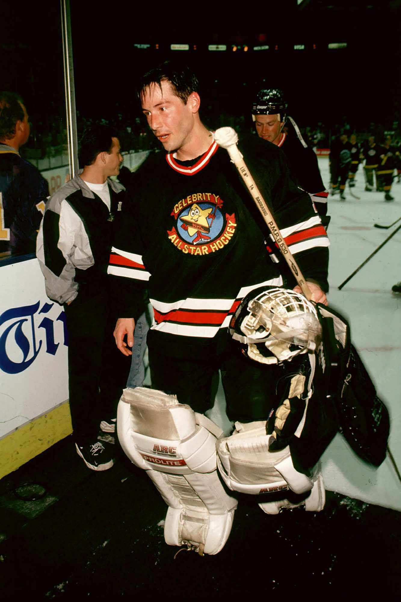

Reeves is a passionate motorcyclist — he’s been riding since his 20s and co-founded the company Arch Motorcycle Company in 2011.
In the 1990s he played bass in the band Dogstar.
He has shown interest in literature, art, and photography.
He engages in physical training (especially for action roles) and enjoys sports such as ice hockey and riding horses.
Reeves has spoken about being “very spiritual” though he resists simple labels of religion.
,Beyond formal hobbies, Reeves is frequently noted for his modest lifestyle and generosity (e.g., using public transport, giving consideration to crew members).